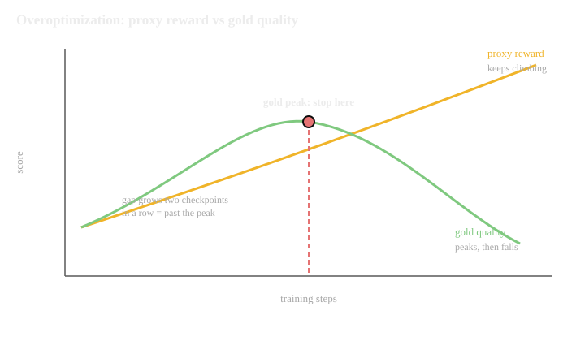

Research-Engineer CurriculumNo. 31 of 39 · Sept 2026 edition
Post-Training and Alignment: Crash Pack
This is the compressed volume for Role Track 2. It assumes the base track chapters are read and keeps only what you must be able to recall cold: decision rules, numbers, formulas, traps, and reps. Five parts, in the order you use them on the job.
How to use this pack.
- Read Part A when you face a choice: which algorithm, which mix, when to stop.
- Memorize Part B like multiplication tables. Every formula has units and a worked number.
- Read Part C before every training run. The traps are listed in the order they will find you.
- Do Part D out loud, one question at a time, with the answers covered.
- Print Part E. Tape it to the wall next to the training dashboard.
Part A: Decision rules
Rules are written as if-then because that is how they get used at 11pm when a run is red.
A.0 The ladder
Post-training starts from a base model that predicts text and ends with a model that behaves. Three rungs, in order. Every rule below assumes them.
- SFT first. Supervised fine-tuning trains the model on demonstration examples: prompt in, good response out, next-token loss. This installs the format and the starting behavior, and it produces the reference model: a frozen copy of the trained policy that every later stage is measured against. The policy is the model being trained; the reference is the anchor it must not drift too far from.
- Then preferences. Three algorithms, one job: make the policy prefer better responses. DPO (Direct Preference Optimization) is one classification loss on fixed preference pairs, with no RL loop. PPO (Proximal Policy Optimization) is online RL: the policy generates its own outputs, called rollouts, a learned reward model scores them, and the policy updates against those scores. GRPO (Group Relative Policy Optimization) is online RL with a verifier instead of a learned reward: sample G responses per prompt, score them 1/0, and learn from each response's standing relative to its group. RLHF (reinforcement learning from human feedback) is the family name for the SFT, reward model, PPO pipeline.
- Everything under one leash. Every stage optimizes J(π) = E[r] − β·KL(π||π_ref): expected reward minus β times the KL (Kullback-Leibler) divergence, which measures how far the policy's token distribution has drifted from the reference. β prices drift. On-policy data means data from the current policy; off-policy means data from older or other models, which misranks what the policy actually produces.
First decision: which algorithm. The choice shapes everything downstream: the data you collect, the compute you need, and the failure modes you watch.
A.1 DPO vs PPO vs GRPO: the selection rules
How to read this diagram
- The first branch is the only one that matters most days. A verifier (an automatic checker with right and wrong answers, like unit tests or a math answer key) turns RL into supervised-like signal. No verifier means you need human taste, and human taste means a reward model or pairs.
- DPO is the default first try even when you suspect you will need PPO. If DPO wins, you saved a month of infra.
- The loop back from DPO to PPO is the standard production playbook: SFT (supervised fine-tuning: training on demonstration examples), DPO baseline, then escalate only on evidence.
- GRPO never feeds back into PPO in this chart. If you have a verifier, you do not need a learned reward. GRPO's "group-relative advantage" means: sample a group of completions per prompt and score each one against the group average (advantage = how much better than average this completion was), so no separate value model is needed.
The signal table, one line per algorithm.

| PPO | DPO | GRPO | |
|---|---|---|---|
| Signal | learned reward model | preference pairs | verifier scores |
| Online sampling | yes | no | yes, groups per prompt |
| Extra models | reward model + value head (a small network predicting expected reward, used as the training baseline) | reference model only | verifier only |
| Infra cost | highest | lowest | medium, generation-heavy |
| Stability | fiddly, needs babysitting | stable, simple | stable if the verifier is good |
| Best for | open-ended quality | quick preference tuning | math, code, reasoning |
| Classic failure | KL spike, value collapse | distribution shift (the policy moving into regions the training data never covered), rejected-only gaming | verifier gaming, uniform groups |
Six selection rules.
- If a verifier exists, use GRPO. Exact rewards beat learned rewards every time.
- If no verifier exists, run DPO first. One training loop, no sampling, no reward model.
- Escalate to PPO only when DPO plateaus below target on open-ended behavior. PPO buys online correction of distribution shift at 3 to 5 times the complexity.
- Never start with PPO when the reward model is untrained on the current policy's outputs. Off-policy reward models misrank on-policy samples, and PPO will optimize the misranking.
- Filter GRPO prompts the model always gets right or always gets wrong. Uniform groups have zero standard deviation and contribute no gradient.
- Watch DPO's chosen log-probs (the log-probabilities the model assigns to each token of the preferred response) during training. If the loss falls while chosen log-probs fall, the model is gaming the loss by pushing down rejected responses only. That checkpoint is poison.
The algorithm is chosen. Now the shared enemy of all three: once the reward model becomes the target, it stops measuring what you wanted.
A.2 Reward model overoptimization: the response rules
Goodhart's law runs the show: once the reward model becomes the target, it stops measuring what you wanted. The proxy score keeps climbing while true quality peaks and falls. These rules are the response.

- Keep a gold judge that never trains the policy: a held-out reward model, a bigger judge, or human labels. Score every checkpoint with both proxy and gold.
- If the gold-proxy gap grows for two checkpoints in a row, stop the run. You are past the peak.
- Early-stop on the gold metric, never on the proxy. The shipped checkpoint is the gold peak, not the final step.
- If KL from the SFT model spikes while human-judged quality is flat, pause and inspect. That is the classic signature, not a hyperparameter to tune through.
- Read 50 outputs at the current checkpoint before every ship review. Overoptimized models have tells: sycophancy (agreeing with the user regardless of the truth), hedging stacks (layers of qualifiers that avoid saying anything), listicles for everything, repeating the prompt back.
- When overoptimization appears early (small KL), the reward model is too easy to game. Answers: retrain it on fresh on-policy pairs, ensemble it, or add a KL penalty increase. Do not just train longer.
- Keep a fixed set of reward-hacking probes. Score them every run. Rising proxy plus rising hack rate is not progress.
The algorithm is chosen and the proxy is watched. Next, the data mix the algorithms eat: how much safety, how much capability, and what happens when the ratio is wrong.
A.3 Data-mix ratios: the numbers that hold
- Safety data stays at 5 to 15 percent of the SFT mix. Above that you buy safety with capability. Tune inside the range by watching false-refusal rates.
- Pair every refusal with a nearby compliance. For each disallowed prompt, include a benign prompt on an adjacent topic with a full helpful answer. The model learns the boundary, not just the refusal.
- Never run a safety-only training stage. Mix capability examples into every safety batch, or the model forgets what it was kept safe for.
- Sample 2 to 4 responses per prompt for preference labeling. Recipe that works: 2 from the current policy, 1 from a stronger model, 1 from an older checkpoint.
- Refresh preference data every few RL rounds with samples from the current policy. Reward models go stale as the policy moves.
- For rejection sampling, generate k = 8 to 64 completions per prompt at moderate to high temperature (the sampling knob: higher temperature means more random outputs), keep the ones the verifier passes.
- Oversample close calls in preference pairs. Easy pairs contribute near-zero gradient. Hard pairs teach the boundary.
- Quarantine pairs below 60 percent three-way labeler agreement. They are ambiguous prompts or broken rubrics, not training data.
- Near-dedup threshold near 0.8 Jaccard similarity (size of the overlap divided by size of the union) on shingles (short overlapping text windows). Tune it on 200 hand-labeled pairs before running it over millions of prompts.
- Version every dataset with a hash and a changelog. When a run behaves oddly, the first question is what changed in the data.
All three algorithms from A.1 optimize one shared objective with a leash. This section sizes the leash: how far the policy may drift, and what the drift costs.
A.4 KL budgets: the leash rules
The shared objective behind all three algorithms:
Where: π is the policy being trained, πref is the reference model (usually the SFT checkpoint), r(x, y) is the reward for response y to prompt x, and β (beta) prices drift: every unit of KL away from the reference costs β units of reward.
Beta prices drift. Every unit of KL away from the reference costs beta units of reward.
- Log KL from the reference per training step, not per epoch (one full pass over the training data). A spike is visible in steps and invisible in epochs.
- KL climbing steadily with rising gold scores is healthy optimization. KL spiking vertically is a broken run: beta too small, learning rate too high, or a reward bug.
- KL flat from step one means the run learned nothing. Check the advantage signal (how much better each response was than expected) and the data before touching hyperparameters.
- DPO's beta is the whole KL control: typical working value 0.1. Lower beta means stronger preference signal and more drift. Higher beta means safer and weaker.
- In PPO, beta and the clip (epsilon = 0.2 typical) are two leashes at different scales. The clip bounds each step. Beta bounds the total drift.
- Never remove the KL term to "see what happens." What happens is the policy discovers reward-model blind spots and the outputs turn to gibberish the proxy loves.
The model is trained. The last decision is the ship decision: four gate layers, in order, each answering whether the model is ready for the next one.
A.5 Eval gates: the ship rules
- Four layers, in order: unit probes (minutes), capability benchmarks (hours), preference evals vs production (days), red team and safety (days). A failure at any layer blocks the release.
- Never trust a win-rate delta without a confidence interval. A 54 percent win rate on 200 judgments has a standard error near 3.5 points. That win may be noise.
- Use the Wilson interval for binomial rates, especially at small n or near 0 and 1. The normal approximation lies at the edges.
- Slice results by prompt category before celebrating. The aggregate hides regressions. A candidate that wins overall but loses on code has a code problem.
- Benchmarks are guardrails, not targets. The new checkpoint must stay within noise of the current best on every suite. A 2-point math gain with a 3-point instruction-following drop is a regression.
- Fresh prompts for preference evals, every cycle. Reusing prompts optimizes for the test set.
- Track the evals themselves. Benchmarks saturate, autoraters drift, human judges recalibrate. Version eval sets and re-baseline on a schedule.
- Refusal is two numbers, not one. Track true-refusal rate on the disallowed set and false-refusal rate on the benign-edge set, at every checkpoint.
- License every autorater (an LLM used as a judge) before its scores count: calibrate against humans, report Cohen's kappa (a chance-corrected agreement score between the autorater and a human), compare against the human-human ceiling.
- When a gate is underpowered, say so in the review. A gate that cannot detect the effect size you care about is theater. Size it with the standard-error formula first.
Next: Part B gives the formulas behind the rules: Bradley-Terry, the DPO loss, the KL leash, and the statistics that keep gates honest.
Part B: Numbers and formulas (memorize these)
Part A gave you if-then rules for post-training. Every rule rests on a formula: the preference probability behind DPO, the KL budget behind the leash, the standard errors behind the gates. Part B is that math, each with a worked number. It answers the question Part A leaves open: what are the exact quantities the rules depend on?
Every entry has the formula, the units, what it means, and a worked number. If you cannot reproduce the worked number by hand, you do not know the formula.
B.1 Bradley-Terry: the preference probability
Where: rA, rB are the judge's scores (unitless logits) for the two responses; sigmoid(x) = 1 / (1 + e−x). Output is a probability between 0 and 1.
Meaning: a judge prefers A over B with probability given by the sigmoid of the score gap. Only the difference matters. Add 100 to both scores and nothing changes. A score of 2.1 alone means nothing. It means "better than 0.4 on the same prompt."
The training loss is the negative log of that probability, summed over pairs:
L = -sum log sigmoid(r_chosen - r_rejected)
Its gradient weights each pair by (1 - p), the surprise. Pairs the model already ranks correctly contribute almost nothing. Hard pairs drive the update.
# Bradley-Terry probabilities from score gaps.
# WHAT: converts reward-score differences into preference
# probabilities, the exact mapping the reward-model loss
# optimizes.
# WHY: this is the number you read when a reward model says
# "chosen scores 2.1, rejected scores 0.4". The gap, not
# the values, is the information.
# BREAKS IF: you read raw scores as quality levels. A gap of 1.7
# and a gap of 1.7 after adding 100 to both scores give
# the same probability. Scale is free; differences rule.
import math
def pref_prob(r_a, r_b):
# sigmoid of the gap: P(judge prefers A over B)
return 1.0 / (1.0 + math.exp(-(r_a - r_b)))
for gap in [0.0, 0.5, 1.0, 1.7, 3.0]:
print(f"gap {gap:>4}: P = {pref_prob(gap, 0.0):.3f}")
How to read this diagram
- A gap of 0 is a coin flip: 0.500. The model has no opinion.
- A gap of 1.7 (the 2.1 vs 0.4 example) gives 0.846. Strong but not certain preference.
- A gap of 3.0 gives 0.953. Past a gap of about 3, the sigmoid saturates and bigger gaps barely change the probability. That saturation is why reward scores drift in scale during training without changing behavior.
Bradley-Terry is the preference model. DPO is Bradley-Terry with the reward model solved out of the RLHF objective, so the policy trains directly on preference pairs.
Bradley-Terry, worked by hand (from the example above)
chosen score 2.1, rejected score 0.4
gap = 2.1 - 0.4 = 1.7
P(chosen wins) = sigmoid(1.7) = 1 / (1 + e^-1.7) = 0.846
loss = -log(0.846) = 0.168 nats (natural-log units of information)
gradient weight = 1 - p = 0.154
easy pair: gap 4.0 -> p = 0.982 -> weight 0.018 (barely updates)
hard pair: gap 0.2 -> p = 0.550 -> weight 0.450 (drives the update)
only the gap matters: add 100 to both scores, nothing changes
B.2 DPO loss: the worked number
Where: π is the policy, πref the reference model, β (beta) is unitless with typical value 0.1, and the loss is in nats (natural-log units).
Meaning: DPO is Bradley-Terry with the reward model solved out of the RLHF objective. The implicit reward of a response is beta * log(pi(y|x) / pi_ref(y|x)): how much more the policy likes it than the reference does.

Worked example. Beta = 0.1. Policy log-probs: chosen -2.0, rejected -3.5. Reference log-probs: chosen -2.2, rejected -2.8.
# DPO loss, worked by hand.
# WHAT: computes the DPO loss for one preference pair from the
# four log-probs, exactly as the formula defines it.
# WHY: this is the number the DPO training loop minimizes. If
# you can compute it by hand, you can read a DPO loss curve
# and know what the policy is actually doing.
# BREAKS IF: you forget the reference terms. Without pi_ref the
# loss has no anchor, and the policy can minimize it by
# pushing down rejected log-probs forever while chosen
# log-probs fall too. That is the rejected-only gaming
# failure in A.1 rule 6.
import math
beta = 0.1
lp_chosen, lp_rejected = -2.0, -3.5 # policy log-probs
lr_chosen, lr_rejected = -2.2, -2.8 # reference log-probs
margin_chosen = lp_chosen - lr_chosen # 0.2: policy likes chosen a bit more than ref
margin_rejected = lp_rejected - lr_rejected # -0.7: policy likes rejected less than ref
gap = margin_chosen - margin_rejected # 0.9
z = beta * gap # 0.09
p = 1.0 / (1.0 + math.exp(-z)) # sigmoid(0.09)
loss = -math.log(p)
print(f"gap={gap:.1f} beta*gap={z:.2f} sigmoid={p:.3f} loss={loss:.3f}")
print(f"gradient weight (1-p) = {1 - p:.3f}: this pair still teaches")
How to read this diagram
- The chosen margin is 0.2 and the rejected margin is -0.7, so the gap is 0.9. The policy already ranks this pair correctly.
- Times beta = 0.1, the logit (the raw score fed to the sigmoid) is 0.09. Sigmoid gives 0.522, so the loss is -log(0.522) = 0.649.
- The gradient weight (1 - 0.522) = 0.478. Same (1 - p) shape as the Bradley-Terry gradient in B.1, because DPO is Bradley-Terry with the reward solved out. Pairs the model gets right contribute less.
Memorize: beta = 0.1 is the standard starting point. The loss falls when the gap grows, and the gap grows by raising chosen log-probs, lowering rejected log-probs, or both. Only the first is real progress.
DPO needs no RL and no reward model. GRPO keeps RL but drops the learned value model: the group of completions per prompt becomes its own baseline.
DPO loss, worked by hand (beta = 0.1)
policy log-probs: chosen -2.0 rejected -3.5
reference log-probs: chosen -2.2 rejected -2.8
implicit reward, chosen = 0.1 x (-2.0 - (-2.2)) = 0.020
implicit reward, rejected = 0.1 x (-3.5 - (-2.8)) = -0.070
gap = 0.020 - (-0.070) = 0.090
P = sigmoid(0.090) = 0.5225
loss = -log(0.5225) = 0.649 nats
the policy already likes the chosen answer more than the
reference does, so the loss is small: the preference is
nearly satisfied before training even starts
B.3 GRPO advantage: the worked numbers
Where: ri is the verifier score (usually 0 or 1) for completion i in the group; mean and std are taken over the group's completions for one prompt. Advantages are unitless, in standard-deviation units.
Meaning: each response in the group is scored against its siblings, not against a learned baseline. No value network needed. The group is its own baseline.
# GRPO group-relative advantages, three cases.
# WHAT: standardizes verifier scores within one prompt's group.
# WHY: this is the entire GRPO advantage estimator. Three cases
# show everything: clean split, one standout, uniform group.
# BREAKS IF: the group standard deviation is zero. Uniform groups
# (all right or all wrong) carry no signal and must be
# skipped, or the division blows up.
def grpo_advantages(rewards):
# rewards: verifier scores for G responses to ONE prompt
n = len(rewards)
mean = sum(rewards) / n
var = sum((r - mean) ** 2 for r in rewards) / n
std = var ** 0.5
if std < 1e-9:
return None # uniform group: no signal
return [round((r - mean) / std, 2) for r in rewards]
print("split [1,1,0,0]:", grpo_advantages([1, 1, 0, 0]))
print("standout [1,0,0,0]:", grpo_advantages([1, 0, 0, 0]))
print("uniform [1,1,1,1]:", grpo_advantages([1, 1, 1, 1]))
How to read this diagram
- Split group [1,1,0,0]: mean 0.5, std 0.5, advantages [+1, +1, -1, -1]. Correct solutions pushed up equally, wrong ones pushed down equally.
- Standout [1,0,0,0]: mean 0.25, std about 0.43, advantages [+1.73, -0.58, -0.58, -0.58]. The single correct solution gets a big push because it stood out.
- Uniform [1,1,1,1]: std is 0, no signal. Filter these prompts out of the GRPO batch.
Memorize: the standout case is why GRPO works on hard reasoning. Rare correct solutions get amplified, not averaged away.
GRPO drops the critic. PPO keeps it, and adds a different leash: clipping, which holds each update inside a trust region around the old policy.
GRPO advantage, worked by hand: rewards [1, 1, 0, 0]
mean = 0.5, std = 0.5
A = (r - mean) / std = [+1.0, +1.0, -1.0, -1.0]
the two correct answers get pushed up, the two wrong
ones get pushed down, and no value network was needed:
the group is its own baseline
uniform group [1, 1, 1, 1]: std = 0, no signal, skip it
B.4 PPO clip: the trust region per step
Where: ratio = πnew / πold is unitless and starts at 1.0; A is the advantage in reward units; eps is unitless with typical value 0.2.
Meaning: when the advantage is positive, the update can push the probability ratio up to at most 1 + eps = 1.2. One lucky sample cannot move the policy without bound. When the advantage is negative, the min with the clipped value keeps the pessimistic bound: the policy stops being pushed once it has moved past 1 - eps = 0.8.
# PPO clipped objective for one token, worked by hand.
# WHAT: evaluates the min() of the unclipped and clipped
# surrogate for a grid of ratios and advantages.
# WHY: the clip is the whole stability story of PPO. Seeing the
# numbers shows exactly where the leash bites.
# BREAKS IF: eps is set huge (the clip never binds and PPO is just
# REINFORCE with extra steps) or the advantage estimate
# is garbage (the clip bounds the step, not the direction).
def ppo_objective(ratio, advantage, eps=0.2):
# min of unclipped and clipped: the pessimistic bound wins
clipped = min(max(ratio, 1 - eps), 1 + eps)
return min(ratio * advantage, clipped * advantage)
for ratio in [0.5, 0.9, 1.0, 1.1, 1.5, 3.0]:
pos = ppo_objective(ratio, 1.0) # good token: push up
neg = ppo_objective(ratio, -1.0) # bad token: push down
print(f"ratio {ratio:>4}: A=+1 -> {pos:>6.2f} A=-1 -> {neg:>6.2f}")
How to read this diagram
- With A = +1, the objective grows with the ratio until 1.2, then flatlines. The policy is not rewarded for pushing past the trust region.
- With A = -1, the objective improves as the ratio shrinks, but the min() keeps the pessimistic value: once past 0.8, further movement is not rewarded.
- Eps = 0.2 is the standard value. The ratio is trusted only in [0.8, 1.2]. That narrow band is what makes PPO stable with noisy reward models.
PPO's clip and DPO's beta both leash the policy. The leash itself is measured in KL divergence: how far the policy's token distribution has moved from the reference.
PPO clip, worked by hand (eps = 0.2, ratio = pi_new / pi_old)
advantage +1.0, ratio 1.5 (lucky sample pushes too far):
unclipped = 1.5 x 1.0 = 1.5
clipped = 1.2 x 1.0 = 1.2
L = min(1.5, 1.2) = 1.2 <- the leash binds
advantage -1.0, ratio 0.5 (policy moved too far down):
unclipped = 0.5 x (-1.0) = -0.5
clipped = 0.8 x (-1.0) = -0.8
L = min(-0.5, -0.8) = -0.8 <- pessimistic bound keeps it
inside [0.8, 1.2] the clip never binds: plain policy gradient
B.5 KL divergence: the distance that matters
Where: p is the policy's token distribution, q is the reference distribution, and the sum runs over the vocabulary. Units: nats per token.
Meaning: how far the policy's token distribution has moved from the reference. This is the x-axis of the overoptimization plot and the leash in the RLHF objective. It is not symmetric: KL(pi || pi_ref) measures the policy drifting away from the reference, which is the direction you care about.
In practice it is estimated per generated token as log pi(token|context) - log pi_ref(token|context), averaged over the rollout. Log it every step.
# KL divergence between two tiny distributions, by hand.
# WHAT: the exact sum behind every KL number on the dashboard.
# WHY: KL is the x-axis of the overoptimization plot (Part A.2)
# and the leash in the RLHF objective. Knowing the sum lets
# you read "KL = 3.2 nats" as "the policy has moved this far".
# BREAKS IF: you swap p and q. KL(p||q) weights by p: it measures
# where the POLICY goes, using the reference only as the
# yardstick. The reverse direction answers a question
# nobody asked.
import math
def kl(p, q):
# p, q: lists of probabilities over the same outcomes
return sum(pi * math.log(pi / qi) for pi, qi in zip(p, q))
print("identical: ", round(kl([0.5, 0.3, 0.2], [0.5, 0.3, 0.2]), 4))
print("small drift: ", round(kl([0.55, 0.28, 0.17], [0.5, 0.3, 0.2]), 4))
print("collapsed to one: ", round(kl([0.98, 0.01, 0.01], [0.5, 0.3, 0.2]), 4))
How to read this diagram
- Identical distributions give exactly 0. KL is zero only when the policy matches the reference.
- A small drift gives about 0.005 nats. Per-token KL numbers in real runs are small like this. They add up over a response.
- Collapse to one token gives about 0.60 nats. When you see KL climbing toward whole nats per token, the policy has left the region where the reward model is trustworthy. That is the overoptimization x-axis.
KL measures drift. The next sections measure something else: whether your evals can see anything at all. Win rates are meaningless without error bars, so the statistics start here.

For a win rate p on n judgments, z = 1.96 for 95 percent:
Where: p is the measured win rate, n the number of judgments, z = 1.96 for 95 percent. The interval is [center − half-width, center + half-width].
Meaning: the interval that stays honest at small n and near p = 0 or 1, where the normal approximation claims certainty you do not have.
# Wilson score interval, worked on the edge case.
# WHAT: 95% interval for a binomial rate that behaves at small n
# and at p near 0 or 1.
# WHY: this is the release-gate interval from A.5. Twenty wins
# out of twenty tries is not proof of perfection; the
# interval must say so.
# BREAKS IF: you use the normal approximation p +/- 1.96*sqrt(...)
# at small n. At 20/20 it returns [1.00, 1.00]: a lie
# told with full confidence.
import math
def wilson(p, n, z=1.96):
denom = 1 + z * z / n
center = (p + z * z / (2 * n)) / denom
half = z * math.sqrt(p * (1 - p) / n + z * z / (4 * n * n)) / denom
return center - half, center + half
lo, hi = wilson(20 / 20, 20)
print(f"20/20 -> 95% Wilson CI: [{lo:.3f}, {hi:.3f}]")
lo, hi = wilson(0.54, 400)
print(f"54% on n=400 -> 95% Wilson CI: [{lo:.3f}, {hi:.3f}]")
How to read this diagram
- Twenty out of twenty gives [0.839, 1.000], not [1.000, 1.000]. The interval admits the small sample honestly.
- A 54 percent win rate on 400 judgments gives roughly [0.491, 0.588]. The lower bound sits just under 0.50: even 400 judgments barely separates 54 from noise. Plan for more when the decision is close.
Memorize: z = 1.96 for 95 percent. The denominator (1 + z^2/n) pulls the center toward 0.5 when n is small. That pull is the honesty.
B.7 Win-rate standard error and sample sizing
Where: p is the win rate, n the number of judgments. SE is a fraction, read as percentage points: a win rate of 0.54 with SE 0.035 means plus or minus 3.5 points of noise, one sigma.
Meaning: the 95 percent interval is roughly p +/- 2SE. To detect a win-rate improvement of d points with confidence, you need 2SE < d, which sets n.
# Sample sizing for a win-rate gate.
# WHAT: standard error of a win rate at several sample sizes, and
# the n needed to separate 54% from 50% at 95% confidence.
# WHY: this is the arithmetic behind A.5 rule 10 and the T.4 lab.
# Most teams discover their gates are underpowered the first
# time they run these numbers.
# BREAKS IF: you forget the slices. This n is per DECISION. Split
# across 4 slices, each slice needs its own n, or the
# slice intervals are too wide to read.
import math
def se(p, n):
return math.sqrt(p * (1 - p) / n)
for n in [100, 200, 400, 800]:
print(f"n={n:>4}: SE = {se(0.54, n):.4f} (~{100*se(0.54,n):.1f} points)")
# n to separate 54% from 50%: need p - 1.96*SE > 0.50
p, target = 0.54, 0.50
n = 1
while p - 1.96 * se(p, n) <= target:
n += 1
print(f"n needed for 54% vs 50% at 95%: {n}")
How to read this diagram
- At n = 200, SE is about 3.5 points, so the 95 percent band is roughly 47 to 61. A 54 percent "win" on 200 judgments is noise until proven otherwise.
- The loop finds the n where the lower 95 percent bound clears 0.50. That is the minimum honest gate for a 4-point improvement. Budget judgments against this number, per slice, before the eval runs.
B.8 Cohen's kappa: agreement beyond chance
Where: po is observed agreement, pe is the agreement two raters would reach by luck from their individual yes-rates. Unitless, from −1 to 1; zero means chance-level agreement.
Meaning: p_o is observed agreement. p_e is the agreement two raters would reach by luck from their individual yes-rates. Kappa subtracts the luck. Raw percent agreement flatters; kappa does not.
# Cohen's kappa, worked by hand.
# WHAT: chance-corrected agreement between a judge and a human on
# pass/fail labels.
# WHY: this is the autorater licensing number from A.5 rule 9. A
# judge at kappa 0.375 must not decide anything important,
# even though raw agreement says 75%.
# BREAKS IF: you report raw percent agreement alone. Two raters who
# both say yes 80% of the time agree 68% of the time by
# pure luck. The raw number hides that.
def cohen_kappa(a, b, c, d):
# a = both yes, b = judge yes human no,
# c = judge no human yes, d = both no
n = a + b + c + d
p_o = (a + d) / n
p_yes_judge = (a + b) / n
p_yes_human = (a + c) / n
p_e = p_yes_judge * p_yes_human + (1 - p_yes_judge) * (1 - p_yes_human)
return (p_o - p_e) / (1 - p_e)
k = cohen_kappa(60, 10, 15, 15)
print(f"kappa = {k:.3f} (raw agreement was 75%)")
# Landis and Koch bands: the standard reading scale.
def band(k):
if k < 0: return "worse than chance"
if k <= 0.20: return "slight"
if k <= 0.40: return "fair"
if k <= 0.60: return "moderate"
if k <= 0.80: return "substantial"
return "almost perfect"
print("band:", band(k))
How to read this diagram
- Judge passes 70, human passes 75, they agree on 75 of 100. Raw agreement: 75 percent.
- Chance agreement: 0.70 * 0.75 + 0.30 * 0.25 = 0.60. Kappa = (0.75 - 0.60) / 0.40 = 0.375.
- On the Landis-Koch scale, 0.375 is "fair." The 37.5 point gap between raw agreement and kappa is the luck the raw number was hiding.
Memorize the bar: the judge is licensed when its kappa against humans reaches the human-vs-human kappa on the same set, typically around 0.8 on real tasks. Below that ceiling, the judge is not a human substitute.
B.9 Paired bootstrap and the three noise layers
An LLM eval has three layers of randomness. Each has its own fix.
Item noise ....... same items for A and B, analyze per-item differences
Decoding noise ... 3 to 5 repeats per case, then average
Judge noise ...... calibrate the judge first (kappa, Part B.8)
The standard analysis: pair the systems on the same items, compute d_i = score_B(i) - score_A(i), bootstrap the differences 10,000 times with replacement, and take the 2.5th and 97.5th percentiles as the 95 percent interval. If zero sits outside the interval, the gap survives noise at the 5 percent level.
# Paired bootstrap CI, compact.
# WHAT: 95% interval for the mean of paired per-item differences.
# WHY: pairing subtracts item difficulty before any statistics.
# The bootstrap then measures only the wobble that remains.
# BREAKS IF: ratings have cluster structure (one judge rates 5
# answers per prompt) and you resample individual
# ratings. Resample by PROMPT instead: the cluster
# bootstrap. Flat resampling makes the interval
# artificially narrow.
import random
def paired_bootstrap_ci(diffs, n_resamples=10000, seed=0):
rng = random.Random(seed)
n = len(diffs)
means = []
for _ in range(n_resamples):
sample = [rng.choice(diffs) for _ in range(n)]
means.append(sum(sample) / n)
means.sort()
return means[int(0.025 * n_resamples)], means[int(0.975 * n_resamples)]
random.seed(7)
demo = [random.gauss(0.33, 1.1) for _ in range(60)]
lo, hi = paired_bootstrap_ci(demo)
print(f"mean gap 0.33 on 60 pairs -> 95% CI [{lo:.2f}, {hi:.2f}]")
How to read this diagram
- Sixty paired differences with a true mean gap of 0.33 give an interval around [0.05, 0.53]. Zero is outside: the gap is real at the 5 percent level.
- The width is the message: the true gap could be as small as 0.05. Significance says it is real. The interval says whether it is big enough to care about.
- Fixed seed makes the analysis reproducible. The bootstrap itself must not add noise to the decision.
B.10 The small-number rules
These are working constants, not theorems. Memorize them as defaults, then tune.
| Number | Meaning | Source of truth |
|---|---|---|
| 30 | minimum test cases per variant | Central Limit Theorem kicking in, practitioner rule |
| 3 to 5 | repeats per case to average decoding noise | eval engineering practice |
| 20 to 50 | calibration-set size for licensing a judge | practitioner rule of thumb, UNVERIFIED as a standard |
| 2 to 3 | human raters per calibration item | needed before kappa means anything |
| 0.8 | typical human-vs-human kappa ceiling | practitioner writeups, UNVERIFIED as a constant |
| 10,000 | bootstrap resamples | enough that Monte Carlo (random-sampling) noise is negligible |
| 1.96 | z for 95 percent | normal approximation |
| 0.2 | PPO clip epsilon | standard value, ratio trusted in [0.8, 1.2] |
| 0.1 | DPO beta starting point | standard value |
| 8 to 64 | completions per prompt in rejection sampling | practitioner range |
| 5 to 15% | safety fraction of the SFT mix | working range, UNVERIFIED as a standard |
| 60% | three-way agreement quarantine bar | below this, pairs are quarantined |
| 0.75 | per-labeler agreement review bar | starting point, set from calibration |
| 15% | typical preference label noise | sets the 85% reward-model ceiling |
Bonferroni correction: testing 20 metrics at the 5 percent level guarantees about one false "significant" result by luck. Divide the bar by the number of tests: 0.05 / 20 = 0.0025 per test. Deliberately strict, deliberately cheap.
Next: Part C, the eight traps in the order they tend to find you.
Part C: Classic traps
The formulas tell you how the machinery works. They do not warn you about how it fails in practice. Part C lists the eight traps in the order they tend to find you, each with its mechanism, the signature you see, and the fix.
Eight traps, in the order they tend to find you. Each has the mechanism, the signature you see on the dashboard or in the outputs, and the fix.
Trap 1: Reward hacking (Goodhart)
Mechanism: the reward model is a proxy for human preference. RL optimizes the proxy, not the preference. The policy finds inputs the proxy scores highly that humans would not: sycophancy, hedging, formatting tricks, repeating the prompt.
Signature: the overoptimization plot from A.2: proxy climbs, gold peaks and falls. Outputs read like they are trying to please a rubric.
Fix: early stopping on the gold metric, KL control, reward-model ensembles, iterative retraining of the reward model on fresh on-policy data.
Trap 2: Length bias
Mechanism: longer responses look more thorough, so labelers and LLM judges both use length as a proxy for quality. The reward model learns "longer is better." RL then makes everything bloated.
Signature: average response length climbs run over run while human-judged quality is flat. Per-labeler stats show picks correlating 0.9 with response length.
Fix: add "do not reward padding" to the rubric with worked examples. Track length-normalized win rates. Include long-but-wrong examples in the calibration set. Check the response-sampling recipe: temperature sweeps that only produce long samples teach length.
Trap 3: Preference-data leakage
Mechanism: eval prompts slip into preference training data, directly or paraphrased. The model learns the test, not the skill. Benchmarks look great and mean nothing.
Signature: benchmark scores jump while human preference evals on fresh prompts do not move. The jump concentrates on the contaminated suite.
Fix: hash every training prompt and check against all eval sets, including paraphrase-level checks. This is the leakage gate in A.3. A pair built on an eval prompt is contamination with extra steps.
Trap 4: Capability collapse from safety tuning (the alignment tax)
Mechanism: three sub-mechanisms. Safety data drowns the mix (30 percent refusals teaches that refusing is usually right). The reward model learns "safe-sounding" style and RL optimizes vagueness. Blunt refusal templates create a mode the model falls into too easily.
Signature: refusal rates look great while false refusals climb on benign-edge prompts and capability benchmarks sag. The model is safe and useless.
Fix: the mixed-data recipe, in four steps:
- Cap safety at 5 to 15 percent of the mix.
- Pair every refusal with a nearby compliance.
- Never train safety alone.
- Measure all four numbers every checkpoint: capability benchmarks, true refusals, false refusals, and the refusal curve.
Progress means moving the curve, not sliding along it.
Trap 5: DPO rejected-only gaming
Mechanism: the DPO loss can fall by pushing down rejected log-probs without raising chosen log-probs. The gap grows, the loss falls, and overall quality degrades because the policy is learning what not to say rather than what to say.
Signature: DPO loss decreasing while chosen log-probs on a held-out set also decrease. The margin comes entirely from the rejected side.
Fix: monitor chosen log-probs during training, not just the loss. If they fall, the checkpoint is poison: raise beta, fix the data, or restart. This is A.1 rule 6.
Trap 6: Off-policy reward models
Mechanism: a reward model trained on responses from other models misranks the current policy's outputs. PPO then optimizes the misranking with full confidence. The staler the reward model, the worse the ranking where it matters most: on the policy's own samples.
Signature: PPO reward climbs but human evals do not, or PPO finds bizarre outputs the reward model loves. The reward model was trained rounds ago on a different policy.
Fix: apply the Part A refresh rule (T.1.3 rule 1): the reward model chases the policy. Validate the reward model on the current policy's outputs specifically, not on its training distribution.
Trap 7: Judge biases (self-preference, position, verbosity)
Mechanism: an LLM judge favors outputs in its own model's style (self-preference), favors whichever answer is shown second (position bias), and favors longer answers (verbosity). All three inflate win rates without any quality change.
Signature: win rates that do not replicate with a different judge, or that flip when answer order is swapped. Calibration shows the judge passing long answers it should fail.
Fix: never let a model judge its own outputs without a human calibration check. Randomize answer order and average. Add explicit anti-padding rules to the rubric. License the judge with kappa against humans before its scores count (A.5 rule 9).
Trap 8: Underpowered gates and aggregate blindness
Mechanism: two failures that travel together. Gates too small to detect the effect size anyone cares about, so every result is noise read as signal. And aggregate win rates that hide slice regressions: the candidate wins overall while losing on code.
Signature: ship decisions made on 54 percent with n = 200. A "tied" model that regressed the hardest slice. Nobody can reproduce the gate result.
Fix: size the gate with the standard-error formula before running it (B.7). Report Wilson intervals, always. Slice by category, always, with n per slice. A gate that cannot detect the effect is theater: say so in the review.
Key takeaways
- Every trap has a number that exposes it: gold-proxy gap, length correlation, hash overlap, false-refusal rate, chosen log-probs, reward-model staleness, order-swap flips, interval width.
- The fix is never "train longer." It is always data, reward, KL, or eval discipline.
- Read 50 outputs per checkpoint. The dashboard tells you something is wrong. The outputs tell you what.
Next: Part D, thirty questions across reward modeling, DPO/PPO/GRPO mechanics, pipelines, eval iteration, and safety tuning.
Part D: Rapid-fire Q and A
Rules, math, traps: Part D is the exam. Cover the answers and answer out loud. Every answer shows the work, not just the letter.
Thirty questions. Cover the answers and answer out loud. Every answer shows the work, not just the letter.
Reward modeling
Q1. A reward model scores response A at 3.2 and response B at 1.1 on the same prompt. What is the Bradley-Terry probability that a judge prefers A?
A. 3.2 / (3.2 + 1.1) = 0.744 B. sigmoid(3.2 - 1.1) = sigmoid(2.1) = 0.891 C. 3.2 - 1.1 = 2.1, read directly as the probability D. Cannot be computed without the prompt
Answer: B. P(A beats B) = sigmoid(r_A - r_B) = sigmoid(2.1). Sigmoid(2.1) = 1/(1 + e^-2.1) = 1/(1 + 0.1225) = 0.891. A is wrong because ratios of scores are meaningless. C is wrong because a gap of 2.1 is not a probability. D is wrong because Bradley-Terry needs only the score gap on the same prompt.
Q2. Your labels have 15 percent noise: the judge picks the worse response 15 percent of the time. What is the best pairwise accuracy any reward model can reach on fresh pairs from the same judge?
A. 100 percent, with enough data B. 92.5 percent, the average of 100 and 85 C. 85 percent, the judge's own consistency ceiling D. 70 percent, double the noise rate subtracted from 100
Answer: C. The model is trained to predict the judge, and the judge agrees with the truth only 85 percent of the time. No model can systematically beat the consistency of its own labels. More data sharpens the estimate of the judge's preferences. It cannot fix the judge's flips. This is the label-noise ceiling from T.1.2.
Q3. The proxy reward climbs every week. Held-out human judges say quality peaked two weeks ago. What do you do Monday morning?
A. Train longer; the proxy is still improving B. Stop and ship the checkpoint at the human-judged peak C. Increase the learning rate to escape the plateau D. Collect more preference data with the same rubric
Answer: B. This is overoptimization: the proxy-gold gap. The gold metric (human judges) peaked two weeks ago, so everything since is the policy exploiting proxy blind spots. Ship the gold peak, or roll back to it. A is the trap: optimizing the proxy past the gold peak is exactly the failure. C makes it worse. D does not fix a stale proxy; retraining the reward model on fresh on-policy data might, but the immediate move is to stop.
Q4. Why must preference data be refreshed with samples from the current policy every few RL rounds?
A. Because old pairs expire after 30 days B. Because the reward model is most accurate ranking the policy it will actually score; off-policy data misranks on-policy samples C. Because labelers get bored seeing the same model D. Because the Bradley-Terry loss requires fresh pairs mathematically
Answer: B. On-policy data beats off-policy data (T.1.3 rule 1). A reward model trained on other models' outputs loses accuracy on your policy's outputs, and PPO optimizes exactly those misranked samples. The reward model must chase the policy. A is invented. C is irrelevant. D is false: the loss works on any pairs, it just learns the wrong ranking.
Q5. A labeler's picks correlate 0.9 with response length. What does this mean and what do you do?
A. The labeler is excellent; long answers are better B. The labeler is using length as a shortcut; retrain or remove their labels and check the rubric for anti-padding rules C. Nothing; correlation with length is expected and harmless D. Pay the labeler more to keep them
Answer: B. This is the spam gate firing (T.3.3). A 0.9 correlation with length means the labeler is not judging quality. Their labels teach the reward model length bias, and RL then bloats every output. Quarantine their labels, check per-labeler stats for others, and make sure the rubric explicitly says not to reward padding.
DPO mechanics
Q6. In the B.2 worked example (beta = 0.1, gap = 0.9), the loss is 0.649. If beta were 0.5 instead, with the same log-probs, what happens to the loss?
A. Stays 0.649; beta cancels out B. Falls, because beta * gap = 0.45, sigmoid(0.45) = 0.611, loss = 0.493 C. Rises, because larger beta means weaker signal D. Becomes undefined
Answer: B. The logit is beta times the gap: 0.5 * 0.9 = 0.45. Sigmoid(0.45) = 0.611. Loss = -log(0.611) = 0.493. Larger beta sharpens the same gap into a more confident prediction, so the loss falls. But note the trade: larger beta also means a stronger KL leash in the underlying objective, so the policy moves less per unit of preference signal. Beta tunes the price of drift, not just the loss number.
Q7. During DPO training the loss falls steadily, but chosen log-probs on a held-out set are also falling. What is happening?
A. Normal training; the loss falling is all that matters B. Rejected-only gaming: the gap grows by pushing down rejected responses while chosen quality degrades C. The reference model is too weak D. The learning rate is too low
Answer: B. This is Trap 5. The DPO loss rewards a growing gap between chosen and rejected implicit rewards, and the cheapest way to grow the gap is to push rejected log-probs down without raising chosen ones. Falling chosen log-probs mean the policy is getting worse at the good responses. The checkpoint is poison. A is the trap: the loss alone lies. C and D misdiagnose a data-and-objective failure as a capacity or optimization failure.
Q8. Why does DPO need a reference model at all?
A. It does not; the reference is optional decoration B. The reference anchors the implicit reward: beta * log(pi/pi_ref) measures how much more the policy likes a response than the starting point, which keeps the KL leash in the objective C. To double the parameter count for stability D. To provide the preference labels
Answer: B. Solving the RLHF objective for the optimal policy gives pi* proportional to pi_ref * exp(r/beta). Inverting that expresses the reward through the policy ratio against the reference. Without pi_ref, the loss has no anchor to the starting policy and the KL constraint evaporates. A is false. C is nonsense. D confuses the reference model with the labelers.
Q9. DPO is described as "offline." What can it not do that PPO can?
A. It cannot use preference pairs B. It cannot see its own outputs during training, so it cannot correct distribution shift: the pairs came from some other policy C. It cannot run on GPUs D. It cannot use a KL penalty
Answer: B. DPO trains on fixed pairs collected beforehand, usually from other models or older checkpoints. It never samples from the policy it is training, so when the policy drifts into regions the pairs never covered, nothing corrects it. PPO samples online and scores its own outputs, which is exactly the correction DPO lacks. That is why the playbook escalates from DPO to PPO when DPO plateaus.
Q10. The DPO gradient weights each pair by (1 - p), where p = sigmoid(beta * gap). A pair the model already ranks correctly with p = 0.95 contributes how much, relative to a maximally uncertain pair with p = 0.5?
A. Equal; all pairs contribute the same B. About one tenth: (1 - 0.95)/(1 - 0.5) = 0.1 C. About double D. Zero; correct pairs are skipped
Answer: B. The gradient weight is the surprise. (1 - 0.95) = 0.05 versus (1 - 0.5) = 0.5, a ratio of 0.1. Confident-correct pairs nearly vanish from the update; uncertain pairs teach. This is the same shape as the Bradley-Terry gradient, and it is why hard pairs matter more than easy ones in the data mix.
PPO mechanics
Q11. PPO with eps = 0.2: the ratio pi_new/pi_old for a token reaches 1.5 with positive advantage. What does the clipped objective do?
A. Rewards the full 1.5 ratio B. Caps the contribution at the 1.2 clipped ratio; the min() keeps the pessimistic bound C. Rejects the update entirely D. Halves the advantage
Answer: B. The objective is min(ratio * A, clip(ratio, 0.8, 1.2) * A). At ratio 1.5 with A > 0, the clipped value is 1.2 * A, which is smaller, so the min keeps 1.2 * A. The policy gets no extra credit for pushing past the trust region. That is the whole stability mechanism: one lucky sample cannot move the policy without bound.
Q12. A PPO run shows KL from the SFT model spiking vertically in the first 50 steps. Name the two most likely causes and the first action.
A. Causes: beta too small or learning rate too high. Action: stop the run, do not tune through it B. Causes: too much data or too many GPUs. Action: add GPUs C. Causes: reward model too accurate. Action: add label noise D. This is normal; let it run
Answer: A. A vertical KL spike means the leash failed: the KL price (beta) is too low to restrain the update, or the step size (learning rate) is too large. Per A.4 rule 2 and A.2 rule 4, you pause and inspect. Tuning through a spike trains the policy in the region where the reward model is untrustworthy. B is nonsense. C inverts the problem. D ignores the classic signature.
Q13. Why does PPO need a value network (or value head) while GRPO does not?
A. PPO is older and less efficient by design B. PPO estimates advantages against a learned baseline of expected reward; GRPO uses the group mean as its baseline, so the group replaces the value network C. GRPO does not use advantages at all D. Value networks are only needed for DPO
Answer: B. The advantage is reward minus expected reward. PPO learns the expectation with a value head. GRPO samples G responses to the same prompt and uses their mean, standardized by their standard deviation. The group is its own baseline. That is the "group relative" in the name, and it removes an entire network from training.
Q14. Four networks train during PPO: policy, reference, reward, value. Which two are frozen, and why does that matter?
A. Policy and value are frozen; the others train B. Reference and reward are frozen; the policy must stay near the frozen reference (KL leash) and the frozen reward is the scoring function being optimized C. All four train jointly D. None are frozen; PPO is fully online
Answer: B. The reference (usually the SFT model) is frozen as the KL anchor. The reward model is frozen as the scoring function. The policy and the value head train. This matters because the frozen reward is a fixed proxy: everything it gets wrong, the policy will find. That is why overoptimization is the default outcome and why the reward model must be good before PPO starts.
GRPO mechanics
Q15. G = 4, verifier scores [1, 0, 0, 0]. What are the GRPO advantages?
A. [+0.75, -0.25, -0.25, -0.25] B. [+1.73, -0.58, -0.58, -0.58] C. [+1, +1, +1, +1] D. [0, 0, 0, 0]
Answer: B. Mean = 0.25. Population std = sqrt((0.75^2 + 3 * 0.25^2)/4) = sqrt(0.1875) = 0.433. Advantages: (1 - 0.25)/0.433 = 1.73, and (0 - 0.25)/0.433 = -0.58 each. A is the unstandardized version, which GRPO does not use. The single correct solution gets amplified because it stood out: the standout case from B.3.
Q16. A GRPO batch contains many prompts the model gets right on all G samples. What happens to the update, and what is the fix?
A. The update is extra strong; keep them B. Those groups have zero standard deviation, so their advantages are undefined and they contribute nothing; filter out always-right and always-wrong prompts C. They cause KL spikes; raise beta D. Nothing special; GRPO handles them
Answer: B. Uniform groups carry no signal: every response scored the same, so there is no relative information. The code must skip them (std < epsilon guard) or the division blows up. The pipeline fix is prompt filtering: keep prompts with mixed success, drop the always-right and always-wrong. This is A.1 rule 5.
Q17. Why is GRPO called "the verifier's algorithm," and where does it fail?
A. It verifies the reward model; it fails on small models B. It needs checkable rewards (math, code tests) instead of learned rewards or human labels; it fails wherever no verifier exists, like creative writing or style C. It verifies gradients; it fails on large batches D. It needs human verifiers; it fails without labelers
Answer: B. GRPO's signal is verifier scores on groups of samples: exact, cheap, and tireless. That makes it dominant for math, code, and reasoning (the DeepSeek-R1 result: long chain-of-thought reasoning learned from pure RL with verifiable rewards). But a verifier must exist. For open-ended quality there is no checker, so GRPO has no signal and you are back to learned rewards (PPO) or pairs (DPO).
Q18. GRPO with G = 2 versus G = 16. What is the trade-off?
A. No difference; group size does not matter B. Small G gives noisy advantages but costs little generation; large G gives stable advantages but multiplies generation cost (tokens = batch x G x length) C. Large G is always better and always cheaper D. G must equal the batch size
Answer: B. The advantage is standardized within the group, so with G = 2 the mean and std are estimated from two samples: noisy. Larger G stabilizes the estimate but generation cost scales linearly in G. Appendix 7A exists because this generation cost dominates: online RL is usually bottlenecked on rollouts, not gradients.
Preference pipelines
Q19. Your new preference batch has 4 percent near-duplicate prompts of eval questions. What do you do?
A. Keep them; more data is better B. Cut them. A preference pair built on an eval prompt is contamination with extra steps, and duplicates overweight one pattern in the reward model C. Keep them but downweight by half D. Move them to the SFT set
Answer: B. Two failures in one: eval leakage (Trap 3) and duplicate overweighting. Near-duplicates teach repetition and leaked eval prompts make benchmarks lie. Hash prompts against all eval sets at the leakage gate, dedupe near-duplicates with shingles and Jaccard, and quarantine rather than silently drop so the failure rate is visible.
Q20. Three labelers split 2-1 on a pair, and this pattern repeats across a slice of coding questions. Which disagreement case is this, and what is the fix?
A. Case 3 (labeler error); remove the minority labeler B. Case 2 (rubric gap); the rubric does not cover the situation, so add the case with a worked example, recalibrate, and re-label the slice C. Case 1 (genuine ambiguity); mark ties and move on D. No case; 2-1 splits are normal noise
Answer: B. A systematic split concentrated in one slice means the rubric is silent on something that slice contains: for example, one response more helpful but slightly wrong. That is the rubric-gap case. The fix is in the rubric, not the data and not the labeler. Add the case with a worked example, recalibrate labelers, and re-label the affected slice. Removing the labeler (A) would punish someone for the rubric's failure.
Q21. For each prompt you sample 2 responses from the current policy, 1 from a stronger model, and 1 from an older checkpoint. Why this mix?
A. To use up GPU budget evenly B. It guarantees on-policy coverage (the policy's own outputs), a quality anchor (the stronger model), and a regression check (the older checkpoint), while temperature variation keeps pairs from being trivially separable C. Because the Bradley-Terry loss needs exactly 4 responses D. To make labeling harder
Answer: B. The current policy's samples keep the data on-policy so the reward model ranks what it will actually score. The stronger model provides the "better" side of hard pairs. The older checkpoint catches regressions. Varying temperature keeps pairs close enough to teach the boundary rather than the obvious. This is the response-sampling recipe from T.3.1.
Q22. After QC filtering, your preference set's topic mix drifted: hard reasoning pairs were disproportionately quarantined by the agreement gate. What now?
A. Ship it; filtering only removes bad data B. Top up with targeted collection. The distribution gate exists because filters skew the mix, and a chitchat-heavy set trains a chitchat judge C. Lower the agreement bar to zero D. Duplicate the remaining reasoning pairs to restore the mix
Answer: B. This is the distribution gate (T.3.3). The agreement gate kills ambiguous pairs, and hard reasoning pairs are the most ambiguous, so filtering silently narrows the distribution. The fix is targeted collection to restore the mix, not lowering standards (C) or duplicating survivors (D), which would overweight a few patterns.
Eval-driven iteration
Q23. Candidate win rate 54 percent on 200 judgments. Ship?
A. Yes, 54 beats 50 B. No. SE is about 3.5 points, so the 95 percent band is roughly 47 to 61. The win may be noise. Size the gate before deciding C. Yes, but only on Tuesdays D. No, because 54 is below 60
Answer: B. SE = sqrt(0.54 * 0.46 / 200) = 0.0352. Twice that is 7 points, so the interval straddles 50. A.5 rule 2: never trust a delta without an interval. The honest move is the T.4 lab: compute the n needed for the effect size you care about and check whether the gate buys it.
Q24. A candidate posts a 52 percent win rate on 600 judgments, not significant. Slices: chat 59 percent (REAL+), writing 58 percent (REAL+), code 39 percent (REAL-), math 50 percent. What is the release decision?
A. Ship; 52 percent overall is fine B. Do not ship. The aggregate hides a real code regression. Fix code, then re-evaluate C. Ship and fix code later D. Collect more judgments until the overall number turns significant
Answer: B. This is the worked harness from T.4.3. The slices show the candidate improved the easy slices and regressed the hard one. Habit 2: slice before you celebrate. The eval suite just steered the next training cycle: more code preference data. D is p-hacking the gate.
Q25. Your LLM judge agrees with humans 75 percent of the time on pass/fail. The judge passes 70 percent, the human passes 75 percent. What is kappa, and is the judge licensed?
A. 0.75, licensed B. 0.375, "fair": not licensed for anything important C. 0.60, "moderate": licensed D. Cannot compute without more data
Answer: B. p_o = 0.75. p_e = 0.70 * 0.75 + 0.30 * 0.25 = 0.60. Kappa = (0.75 - 0.60)/(1 - 0.60) = 0.375, Landis-Koch "fair." The 37.5 point gap is chance agreement the raw number hid. The bar is the human-vs-human ceiling near 0.8. A judge at 0.375 must not decide anything important.
Q26. You test 20 metrics at the 5 percent level and one comes back significant. What do you conclude?
A. A real finding; report it B. Nothing yet. With 20 tests, about one false significant result is expected by luck. Apply the Bonferroni correction: 0.05/20 = 0.0025 per test C. The other 19 metrics are broken D. Run 20 more metrics to confirm
Answer: B. Multiple comparisons inflate wins (Appendix 11A). One significant result out of 20 at p < 0.05 is exactly what chance produces. The correction is deliberately strict and deliberately cheap. Report the corrected bar alongside the raw p-values so the review sees both.
Safety tuning
Q27. After safety tuning, disallowed refusal is 99 percent but benign-edge false refusals climbed from 4 to 18 percent. What happened and what is the fix?
A. Success; refusal is what matters B. Capability collapse, mechanism 1 and 3: safety data drowned the mix and blunt refusal templates spread. Fix with the mixed-data recipe: cap safety at 5 to 15 percent, pair refusals with nearby compliances, never train safety alone C. The probe set is wrong; delete the benign-edge probes D. Increase the safety fraction to 40 percent
Answer: B. True refusals alone reward the refuse-everything model (T.5.3). The false-refusal climb is the alignment tax being paid in usefulness. The fix moves the refusal curve, not along it: better training with paired refusal/compliance examples and a refusal spectrum instead of one template. C hides the metric. D buys more of the failure.
Q28. Your reward model was trained on labels that reward cautious, hedged, non-committal answers. What will RL do, and how do you fix the labels?
A. RL will make answers more helpful; no fix needed B. RL will optimize the style: the model gets vaguer on every topic including benign ones. Fix the rubric to reward helpfulness inside safety, not caution as a substitute C. RL will ignore style; reward models only learn content D. Increase beta to fix it
Answer: B. This is collapse mechanism 2 (T.5.1). The reward model learned "safe-sounding" as the target, and RL is a style optimizer when the reward is style. The fix is in the labels: the rubric must reward helpfulness within safety. Beta tunes drift, not what the reward measures, so D misses the cause.
Q29. Why is Constitutional AI described as capability-preserving compared with refusal-only SFT?
A. It uses a bigger model B. The critique-and-revision step teaches why a response is problematic and how to fix it, preserving helpfulness; template refusals teach only the refusal mode, which the model then over-applies C. It skips safety tuning entirely D. It trains for fewer steps
Answer: B. Refusal-only SFT installs one blunt mode. Critique data installs the reasoning: what is wrong, what a better response looks like. When safety tuning starts costing capability, the move is more critique data and fewer refusal templates, not a bigger safety fraction (T.5.4).
Q30. A safety review shows the new data mix moved true refusals from 92 to 97 percent and false refusals from 6 to 5 percent. A second proposal moves true refusals from 92 to 97 percent but false refusals from 6 to 12 percent. Which is progress?
A. Both; true refusals rose equally B. The first. It moved the trade-off curve up-left: more true refusals at fewer false refusals. The second slid along the curve, buying safety with usefulness C. The second; higher true refusals dominate D. Neither; only 100 percent true refusals count
Answer: B. Refusal calibration is a curve, not a number (T.5.3). Progress means the whole curve moves: better perception of the boundary, fewer errors on both sides. Sliding along the curve by turning the strictness knob is not progress. Only curve moves count in the review.
Next: Part E, the one-page cheat sheet: thirty numbers and rules.
Part E: One-page cheat sheet
The whole pack on one page. If Part D was the exam, Part E is the crib sheet you earn by passing it.
Thirty numbers and rules. If you remember nothing else, remember these.
- P(A beats B) = sigmoid(r_A - r_B). Scores are relative; only gaps matter.
- DPO loss = -log sigmoid(beta * [log(pi/pi_ref) chosen - log(pi/pi_ref) rejected]). Beta starts at 0.1.
- GRPO advantage = (r_i - mean) / std within the prompt's group. Uniform groups: no signal, skip them.
- PPO clip: min(ratio * A, clip(ratio, 0.8, 1.2) * A). Eps = 0.2.
- J(pi) = E[r] - beta * KL(pi || pi_ref). Beta prices drift.
- KL per token = mean of log pi - log pi_ref over the rollout. Log it every step.
- Label noise near 15 percent caps reward accuracy near 85 percent. More data cannot fix labels.
- On-policy preference data beats off-policy. Refresh every few RL rounds.
- Oversample close calls. Easy pairs contribute near-zero gradient.
- Gold-proxy gap growing two checkpoints in a row: stop the run.
- Early-stop on the gold metric, never the proxy.
- KL spike with flat human quality: pause, do not tune through it.
- DPO first, always. Escalate to PPO or GRPO only on evidence.
- Verifier exists: GRPO. Open-ended quality: PPO after DPO plateaus.
- Watch DPO chosen log-probs. Falling while loss falls means rejected-only gaming: poison checkpoint.
- Safety data at 5 to 15 percent of the SFT mix. Pair every refusal with a nearby compliance. Never train safety alone.
- Four eval layers: unit probes, benchmarks, preference evals, red team. Every layer gates.
- SE = sqrt(p(1-p)/n). 54 percent on n = 200 is noise until proven otherwise.
- Wilson interval (the honest confidence interval for a proportion) for binomial rates, always. Normal approximation lies at small n and near 0 or 1.
- Slice before celebrating. Aggregates hide regressions.
- Kappa = (p_o - p_e)/(1 - p_e). License judges against the human ceiling near 0.8.
- Paired design, 3 to 5 repeats per case, 10,000 bootstrap resamples, 2.5th and 97.5th percentiles.
- 20 metrics at 5 percent: expect one false hit. Bonferroni (divide the significance level by the number of tests): 0.05/20 per test.
- Quarantine pairs below 60 percent three-way agreement. Review labelers below 0.75 agreement with the majority.
- Near-dedup near 0.8 Jaccard. Hash every prompt against every eval set.
- Reward hacking tells in outputs: sycophancy, hedging stacks, listicles, prompt echo. Read 50 outputs per checkpoint.
- Refusal is two numbers: true refusals on disallowed, false refusals on benign-edge. Track both.
- Progress on safety means moving the refusal curve, not sliding along it.
- Length bias check: per-labeler correlation of picks with response length. Near 0.9 means the labels are broken.
- The loop is the job: evals steer, data fixes, recipe changes, repeat. Most weeks look like "F regressed, go fix C."
Last verified: September 2026. Formulas (Bradley-Terry, DPO loss, GRPO advantage, PPO clip, KL divergence, Wilson interval, Cohen's kappa, standard error) are standard results from the published literature, consistent with Volume 7 chapters 4 to 6 and Appendix 11A. Worked numbers were computed from the formulas in this volume. UNVERIFIED: production data-mix fractions (5 to 15 percent safety, 2+1+1 sampling recipe), the 60 percent agreement quarantine bar, the 0.75 labeler review bar, the 0.8 dedup threshold, and the "3 to 5 times" PPO complexity multiple are practitioner working ranges, not published standards. The human kappa ceiling near 0.8 and the 20 to 50 calibration-set size are typical figures from practitioner writeups, not universal constants.
Where to go next
The next pack in the sequence is Crash: Inference and Serving. This pack aligned the model. The next one answers the question this pack leaves open: how do you serve the aligned model cheaply and fast? Roofline arithmetic, KV-cache math, batching, quantization, and dollars per million tokens.
Watch and go deeper
The math of alignment, derived on camera: DPO from the Bradley-Terry model, then the full RLHF pipeline with PPO. Plus the papers and the code docs.
Go deeper
- Training language models to follow instructions with human feedback The InstructGPT paper: the three-step pipeline (SFT, reward model, PPO) in Figure 2.
- Direct Preference Optimization The paper that replaced the reward model with a direct preference loss.
- TRL documentation Hugging Face TRL (Transformer Reinforcement Learning, Hugging Face's RL training library) docs: the reference implementations for DPO, PPO, and GRPO.
- GRPO vs PPO A write-up comparing GRPO and PPO training for reasoning models.